import matplotlib.pyplot as plt
import pandas as pd
import seaborn as sns
import numpy as np
import sklearn.metrics as metrics
from sklearn.model_selection import train_test_split, cross_validate
from sklearn.linear_model import LogisticRegression, LogisticRegressionCV
from sklearn.metrics import ConfusionMatrixDisplay, confusion_matrix, precision_score, recall_score, RocCurveDisplay, roc_curve, auc, roc_auc_score
from sklearn.preprocessing import LabelBinarizer, label_binarize
from sklearn.multiclass import OneVsRestClassifier
from sklearn.ensemble import BaggingRegressor, GradientBoostingRegressor
sns.set_theme()
RANDOM_STATE = 42Il s’agit à partir d’un jeu de données sur le niveau de stress ressenti par les étudiants dans le niveau supérieur, d’étudier les détermiannts potentiels, le rôle de ces covariables. Nous commençons par une analyse du jeu de données à disposition, par al réalisation de statistiques descriptives, puis implémentons une régression logistique, Lasso/ridge, validation croisée pour déterminer l’influence des covariables à disposition dans le jeu de données sur le niveau de stress.
Import et exploration du jeu de données
file_name="stress.csv"
stress=pd.read_csv(file_name, sep=';')
stress=stress.iloc[:,1:]
# On affiche les 5 premières lignes pour une première visualisation
stress.head(5)| niveau_anxiete | estime_de_soi | historique_sante_mentale | depression | maux_de_tete | tension_arterielle | qualite_sommeil | problem_respiratoire | niveau_bruit | conditions_vie | ... | besoins_elementaires | reussite_academique | charge_travail | relation_prof_etudiant | perspective_insertion_professionnelle | soutien_social | pression_des_paires | activites_extrascolaires | harcelement | niveau_stress | |
|---|---|---|---|---|---|---|---|---|---|---|---|---|---|---|---|---|---|---|---|---|---|
| 0 | 14 | 20 | 0 | 11 | 2 | 1 | 2 | 4 | 2 | 3 | ... | 2 | 3 | 2 | 3 | 3 | 2 | 3 | 3 | 2 | 1 |
| 1 | 15 | 8 | 1 | 15 | 5 | 3 | 1 | 4 | 3 | 1 | ... | 2 | 1 | 4 | 1 | 5 | 1 | 4 | 5 | 5 | 2 |
| 2 | 12 | 18 | 1 | 14 | 2 | 1 | 2 | 2 | 2 | 2 | ... | 2 | 2 | 3 | 3 | 2 | 2 | 3 | 2 | 2 | 1 |
| 3 | 16 | 12 | 1 | 15 | 4 | 3 | 1 | 3 | 4 | 2 | ... | 2 | 2 | 4 | 1 | 4 | 1 | 4 | 4 | 5 | 2 |
| 4 | 16 | 28 | 0 | 7 | 2 | 3 | 5 | 1 | 3 | 2 | ... | 3 | 4 | 3 | 1 | 2 | 1 | 5 | 0 | 5 | 1 |
5 rows × 21 columns
# Type des variables : ce sont toutes des variables quantitatives (ou au moins binaires)
print("Taille du jeu de données : ", stress.shape)
print("Des valeurs manquantes ?", stress.isnull().values.any())
print("Description du type des variables du jeu de données", stress.dtypes)Taille du jeu de données : (1100, 21)
Des valeurs manquantes ? False
Description du type des variables du jeu de données niveau_anxiete int64
estime_de_soi int64
historique_sante_mentale int64
depression int64
maux_de_tete int64
tension_arterielle int64
qualite_sommeil int64
problem_respiratoire int64
niveau_bruit int64
conditions_vie int64
securite int64
besoins_elementaires int64
reussite_academique int64
charge_travail int64
relation_prof_etudiant int64
perspective_insertion_professionnelle int64
soutien_social int64
pression_des_paires int64
activites_extrascolaires int64
harcelement int64
niveau_stress int64
dtype: object# Résumé quantitatif des données
stress.describe().apply(lambda s: s.round(2))| niveau_anxiete | estime_de_soi | historique_sante_mentale | depression | maux_de_tete | tension_arterielle | qualite_sommeil | problem_respiratoire | niveau_bruit | conditions_vie | ... | besoins_elementaires | reussite_academique | charge_travail | relation_prof_etudiant | perspective_insertion_professionnelle | soutien_social | pression_des_paires | activites_extrascolaires | harcelement | niveau_stress | |
|---|---|---|---|---|---|---|---|---|---|---|---|---|---|---|---|---|---|---|---|---|---|
| count | 1100.00 | 1100.00 | 1100.00 | 1100.00 | 1100.00 | 1100.00 | 1100.00 | 1100.00 | 1100.00 | 1100.00 | ... | 1100.00 | 1100.00 | 1100.00 | 1100.00 | 1100.00 | 1100.00 | 1100.00 | 1100.00 | 1100.00 | 1100.00 |
| mean | 11.06 | 17.78 | 0.49 | 12.56 | 2.51 | 2.18 | 2.66 | 2.75 | 2.65 | 2.52 | ... | 2.77 | 2.77 | 2.62 | 2.65 | 2.65 | 1.88 | 2.73 | 2.77 | 2.62 | 1.00 |
| std | 6.12 | 8.94 | 0.50 | 7.73 | 1.41 | 0.83 | 1.55 | 1.40 | 1.33 | 1.12 | ... | 1.43 | 1.41 | 1.32 | 1.38 | 1.53 | 1.05 | 1.43 | 1.42 | 1.53 | 0.82 |
| min | 0.00 | 0.00 | 0.00 | 0.00 | 0.00 | 1.00 | 0.00 | 0.00 | 0.00 | 0.00 | ... | 0.00 | 0.00 | 0.00 | 0.00 | 0.00 | 0.00 | 0.00 | 0.00 | 0.00 | 0.00 |
| 25% | 6.00 | 11.00 | 0.00 | 6.00 | 1.00 | 1.00 | 1.00 | 2.00 | 2.00 | 2.00 | ... | 2.00 | 2.00 | 2.00 | 2.00 | 1.00 | 1.00 | 2.00 | 2.00 | 1.00 | 0.00 |
| 50% | 11.00 | 19.00 | 0.00 | 12.00 | 3.00 | 2.00 | 2.50 | 3.00 | 3.00 | 2.00 | ... | 3.00 | 2.00 | 2.00 | 2.00 | 2.00 | 2.00 | 2.00 | 2.50 | 3.00 | 1.00 |
| 75% | 16.00 | 26.00 | 1.00 | 19.00 | 3.00 | 3.00 | 4.00 | 4.00 | 3.00 | 3.00 | ... | 4.00 | 4.00 | 3.00 | 4.00 | 4.00 | 3.00 | 4.00 | 4.00 | 4.00 | 2.00 |
| max | 21.00 | 30.00 | 1.00 | 27.00 | 5.00 | 3.00 | 5.00 | 5.00 | 5.00 | 5.00 | ... | 5.00 | 5.00 | 5.00 | 5.00 | 5.00 | 3.00 | 5.00 | 5.00 | 5.00 | 2.00 |
8 rows × 21 columns
# Description de la variable d'intérêt, niveau_stress, et de deux autres variables
print("Niveau de stress", stress["niveau_stress"].value_counts())
print("Historique santé mentale", stress["historique_sante_mentale"].value_counts())
print("Tension artérielle", stress["tension_arterielle"].value_counts())Niveau de stress niveau_stress
0 373
2 369
1 358
Name: count, dtype: int64
Historique santé mentale historique_sante_mentale
0 558
1 542
Name: count, dtype: int64
Tension artérielle tension_arterielle
3 500
1 300
2 300
Name: count, dtype: int64Le nombre de personnes dans chacune des classes définies par la variable d’intérêt ‘niveau_stress’ est environ le même, autour de 360-370 personnes. Il n’y a donc pas de classe qui domine les autres.
Visualisation
On réalise plusieurs graphiques afin d’avoir un premier aperçu du lien entre la variable stress et d’autres variables du jeu de données, en lien avec la santé mentale et la réussite académique. En lien avec la santé mentale, on identifie par exemple les variables relatives à l’estime de soi, la dépression et l’historique de santé mentale. On considère également que le soutien social en ce qu’il peut représenter un soutien mental.
# Historique santé mentale
ax=sns.histplot(data=stress, x='niveau_stress', hue='historique_sante_mentale', multiple='stack')
ax.set(xlabel='Niveau de stress')
legend=ax.get_legend()
legend.set_title('Historique de santé mentale')
legend.get_title().set_fontsize(8)
for text in legend.get_texts():
text.set_fontsize(8)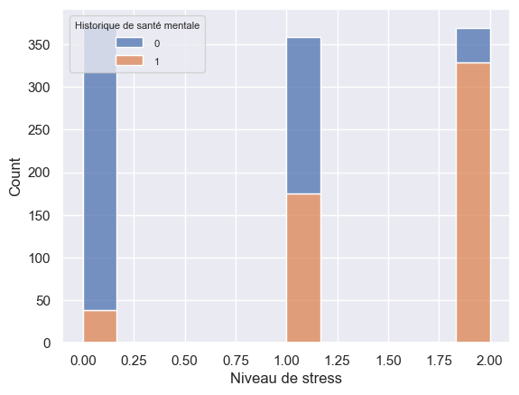
La valeur 1 associée à l’historique de santé mentale semble être associée à des problèmes passés, celle-ci étant davantage présente pour des niveaux de stress augmentant.
# Estime de soi
ax=sns.histplot(data=stress, x="estime_de_soi", hue="niveau_stress", multiple='stack',alpha=0.5)
ax.set(xlabel="Estime de soi", title="Niveau de stress selon l'estime de soi")
legend=ax.get_legend()
legend.set_title('Niveau de stress')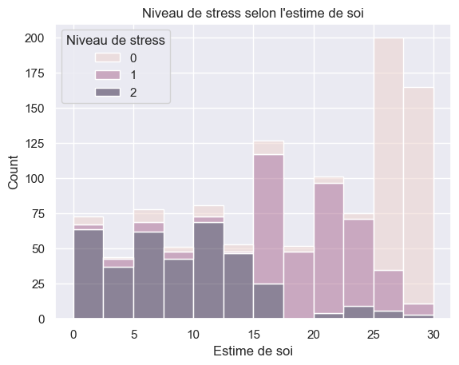
Une faible estime de soi semble être associée à un haut niveau de stress et réciproquement, les personnes reportant un niveau de stress de zéro coïncident avec les personnes reportant un haut score d’estime de soi.
# On essaye de comprendre comment sont encodées les variables de réussite académique et de perspective d'insertion professionnelle
ax=sns.histplot(data=stress, x="reussite_academique", hue="perspective_insertion_professionnelle", multiple='dodge', binwidth=0.8, alpha=0.7)
ax.set(xlabel='Réussite académique')
legend=ax.get_legend()
legend.set_title('Perspective d insertion professionnelle')
legend.get_title().set_fontsize(8)
for text in legend.get_texts():
text.set_fontsize(8)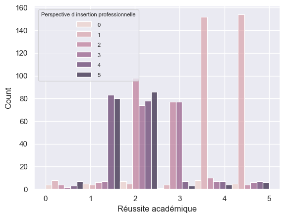
Si l’on suppose qu’une valeur de 5 est associée à une très bonne réussite académique, de 0 à une mauvaise réussite académique, on n’observe pas de lien clair entre cette variable et la variable d’insertion professionnelle. Du moins, une réussite académique moyenne semble être associée à des niveaux divers d’insertions professionnelle et il n’apparaît pas de corrélation positive entre réussite académique et insertion professionnelle.
ax=sns.countplot(data=stress, x="niveau_stress", hue="reussite_academique", order=[0, 1, 2])
ax.set(xlabel='Niveau de stress')
legend=ax.get_legend()
legend.set_title('Reussite académique')
legend.get_title().set_fontsize(8)
for text in legend.get_texts():
text.set_fontsize(8)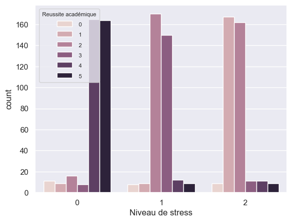
# Soutien social
ax=sns.countplot(data=stress, x='niveau_stress', hue='soutien_social', order=[0,1,2])
ax.set(xlabel='Niveau de stress')
legend=ax.get_legend()
legend.set_title('Soutien social')
legend.get_title().set_fontsize(8)
for text in legend.get_texts():
text.set_fontsize(8)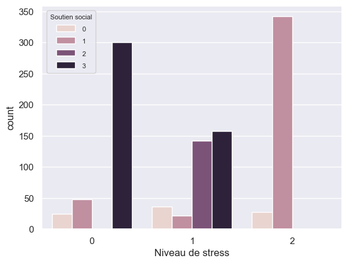
# Dépression
ax=sns.histplot(data=stress, x='depression', hue='niveau_stress', multiple='stack',alpha=0.7)
ax.set(xlabel='Dépression')
legend=ax.get_legend()
legend.set_title('Niveau de stress')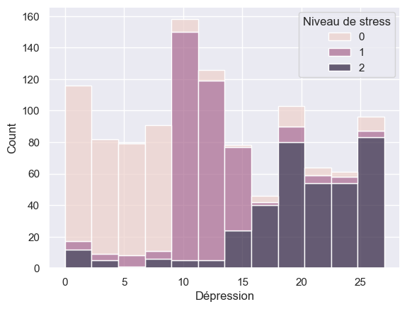
Première régression logistique
On réalise une régression logistique sans pénalisation, pour avoir un premier aperçu de la performance d’un modèle simple. La variable d’intérêt (ou le label), encodant le niveau de stress, peut prendre trois valeurs 0, 1, 2. On choisit de comparer la régression multi-classes à la méthode OneVsRest qui fixe une classe de référence et concatène les deux autres afin d’effectuer une régression binaire. Etant donné que notre variable stress est encodée selon trois niveaux, trois régressions OneVsRest sont possibles.
# Préparation du jeu de données
X, y = stress.drop(['niveau_stress'], axis=1), stress['niveau_stress']
X=(X-X.mean())/X.std()
X.describe()| niveau_anxiete | estime_de_soi | historique_sante_mentale | depression | maux_de_tete | tension_arterielle | qualite_sommeil | problem_respiratoire | niveau_bruit | conditions_vie | securite | besoins_elementaires | reussite_academique | charge_travail | relation_prof_etudiant | perspective_insertion_professionnelle | soutien_social | pression_des_paires | activites_extrascolaires | harcelement | |
|---|---|---|---|---|---|---|---|---|---|---|---|---|---|---|---|---|---|---|---|---|
| count | 1.100000e+03 | 1.100000e+03 | 1.100000e+03 | 1.100000e+03 | 1.100000e+03 | 1.100000e+03 | 1.100000e+03 | 1.100000e+03 | 1.100000e+03 | 1.100000e+03 | 1.100000e+03 | 1.100000e+03 | 1.100000e+03 | 1.100000e+03 | 1.100000e+03 | 1.100000e+03 | 1.100000e+03 | 1.100000e+03 | 1.100000e+03 | 1.100000e+03 |
| mean | -1.356491e-16 | -1.130409e-17 | 6.136505e-17 | 8.720297e-17 | -7.751375e-17 | 2.050885e-16 | -1.130409e-16 | 1.421085e-16 | 1.453383e-16 | 8.235836e-17 | -5.167584e-17 | -1.146558e-16 | -1.570461e-16 | 1.772320e-16 | 1.453383e-16 | 6.136505e-17 | -4.198662e-17 | 1.081963e-16 | 1.776357e-16 | 4.521636e-17 |
| std | 1.000000e+00 | 1.000000e+00 | 1.000000e+00 | 1.000000e+00 | 1.000000e+00 | 1.000000e+00 | 1.000000e+00 | 1.000000e+00 | 1.000000e+00 | 1.000000e+00 | 1.000000e+00 | 1.000000e+00 | 1.000000e+00 | 1.000000e+00 | 1.000000e+00 | 1.000000e+00 | 1.000000e+00 | 1.000000e+00 | 1.000000e+00 | 1.000000e+00 |
| min | -1.808505e+00 | -1.987487e+00 | -9.851107e-01 | -1.624879e+00 | -1.779665e+00 | -1.417771e+00 | -1.717922e+00 | -1.965882e+00 | -1.994607e+00 | -2.249968e+00 | -1.946614e+00 | -1.933884e+00 | -1.960087e+00 | -1.992595e+00 | -1.912627e+00 | -1.732139e+00 | -1.795925e+00 | -1.918622e+00 | -1.952135e+00 | -1.709565e+00 |
| 25% | -8.277218e-01 | -7.576944e-01 | -9.851107e-01 | -8.483820e-01 | -1.070121e+00 | -1.417771e+00 | -1.072086e+00 | -5.380376e-01 | -4.887266e-01 | -4.629898e-01 | -5.243122e-01 | -5.389513e-01 | -5.462539e-01 | -4.725849e-01 | -4.681438e-01 | -1.078277e+00 | -8.415689e-01 | -5.153746e-01 | -5.412621e-01 | -1.056380e+00 |
| 50% | -1.040225e-02 | 1.367001e-01 | -9.851107e-01 | -7.188481e-02 | 3.489666e-01 | -2.181187e-01 | -1.033336e-01 | 1.758844e-01 | 2.642135e-01 | -4.629898e-01 | -5.243122e-01 | 1.585151e-01 | -5.462539e-01 | -4.725849e-01 | -4.681438e-01 | -4.244157e-01 | 1.127876e-01 | -5.153746e-01 | -1.885439e-01 | 2.499920e-01 |
| 75% | 8.069173e-01 | 9.192952e-01 | 1.014191e+00 | 8.340285e-01 | 3.489666e-01 | 9.815340e-01 | 8.654192e-01 | 8.898064e-01 | 2.642135e-01 | 4.304993e-01 | 8.979897e-01 | 8.559814e-01 | 8.675797e-01 | 2.874200e-01 | 9.763391e-01 | 8.833077e-01 | 1.067144e+00 | 8.878731e-01 | 8.696106e-01 | 9.031778e-01 |
| max | 1.624237e+00 | 1.366492e+00 | 1.014191e+00 | 1.869358e+00 | 1.768055e+00 | 9.815340e-01 | 1.511254e+00 | 1.603728e+00 | 1.770094e+00 | 2.217477e+00 | 1.609141e+00 | 1.553448e+00 | 1.574496e+00 | 1.807430e+00 | 1.698581e+00 | 1.537169e+00 | 1.067144e+00 | 1.589497e+00 | 1.575047e+00 | 1.556364e+00 |
# Préparation des sets d'entraînement et de test
X_train, X_test, y_train, y_test = train_test_split(X, y, test_size=0.2, stratify=y, random_state=RANDOM_STATE)
print(X_train.shape, X_test.shape, y_train.shape, y_test.shape) # Vérification des tailles des jeux de données
print("Distribution originale :")
print(y.value_counts(normalize=True))
print("\nDistribution train :")
print(y_train.value_counts(normalize=True))
print("\nDistribution test :")
print(y_test.value_counts(normalize=True))
# Modèles
model_multinom=LogisticRegression(penalty=None, max_iter=1000, random_state=RANDOM_STATE)
model_multinom.fit(X_train, y_train)
model_ovr=OneVsRestClassifier(LogisticRegression(penalty=None, max_iter=1000, random_state=RANDOM_STATE))
model_ovr.fit(X_train, y_train)(880, 20) (220, 20) (880,) (220,)
Distribution originale :
niveau_stress
0 0.339091
2 0.335455
1 0.325455
Name: proportion, dtype: float64
Distribution train :
niveau_stress
0 0.339773
2 0.335227
1 0.325000
Name: proportion, dtype: float64
Distribution test :
niveau_stress
0 0.336364
2 0.336364
1 0.327273
Name: proportion, dtype: float64OneVsRestClassifier(estimator=LogisticRegression(max_iter=1000, penalty=None,
random_state=42))In a Jupyter environment, please rerun this cell to show the HTML representation or trust the notebook. On GitHub, the HTML representation is unable to render, please try loading this page with nbviewer.org.
Parameters
| estimator | LogisticRegre...ndom_state=42) | |
| n_jobs | None | |
| verbose | 0 |
LogisticRegression(max_iter=1000, penalty=None, random_state=42)
Parameters
| penalty | None | |
| dual | False | |
| tol | 0.0001 | |
| C | 1.0 | |
| fit_intercept | True | |
| intercept_scaling | 1 | |
| class_weight | None | |
| random_state | 42 | |
| solver | 'lbfgs' | |
| max_iter | 1000 | |
| multi_class | 'deprecated' | |
| verbose | 0 | |
| warm_start | False | |
| n_jobs | None | |
| l1_ratio | None |
def df_coef(model):
if hasattr(model, 'estimators_'): # Pour gérer le modèle OneVsRest, qui induit un modèle par classe
feature_names = model.feature_names_in_
classes = model.classes_
data = []
class_labels = []
for i, estimator in enumerate(model.estimators_):
coef = estimator.coef_[0]
data.append(coef)
class_labels.append(classes[i])
df = pd.DataFrame(
data,
columns=feature_names,
index=class_labels
)
return df
return pd.DataFrame(
model.coef_,
columns=model.feature_names_in_,
index=model.classes_
)
coef_multiclass = df_coef(model_multinom)
coef_ovr = df_coef(model_ovr)coef_multiclass| niveau_anxiete | estime_de_soi | historique_sante_mentale | depression | maux_de_tete | tension_arterielle | qualite_sommeil | problem_respiratoire | niveau_bruit | conditions_vie | securite | besoins_elementaires | reussite_academique | charge_travail | relation_prof_etudiant | perspective_insertion_professionnelle | soutien_social | pression_des_paires | activites_extrascolaires | harcelement | |
|---|---|---|---|---|---|---|---|---|---|---|---|---|---|---|---|---|---|---|---|---|
| 0 | -0.041761 | 0.173868 | 0.267869 | -0.074105 | -0.230103 | 0.594785 | 0.140162 | -0.063832 | -0.112678 | -0.02037 | 0.159834 | 0.346028 | 0.379544 | -0.393089 | 0.196549 | -0.026949 | 1.286463 | -0.125211 | -0.212472 | -0.068059 |
| 1 | 0.133522 | 0.277649 | -0.378604 | -0.097787 | -0.083287 | -4.669630 | 0.066507 | -0.025545 | -0.074914 | -0.00124 | 0.015134 | -0.261776 | -0.048368 | 0.319739 | -0.388200 | 0.086421 | -1.793401 | -0.085803 | 0.108206 | -0.162304 |
| 2 | -0.091761 | -0.451517 | 0.110735 | 0.171893 | 0.313390 | 4.074845 | -0.206669 | 0.089377 | 0.187592 | 0.02161 | -0.174968 | -0.084253 | -0.331176 | 0.073350 | 0.191651 | -0.059472 | 0.506938 | 0.211015 | 0.104267 | 0.230363 |
On retrouve ci-dessus les coefficients de la régression logistique multiclasse associées aux variables pour pour chacune des classes \(0, 1, 2\). Les résultats de la régression OneVsRest ci-dessous, eux correspondent aux coefficients que l’on obtient lorsque la classe \(i\in\{0,1,2\}\) est prise comme référence et que les deux autres classes sont concaténées comme contrepartie. Il s’agit de coefficients dans chacun des trois cas à une régression pour un problème de classification binaire.
coef_ovr| niveau_anxiete | estime_de_soi | historique_sante_mentale | depression | maux_de_tete | tension_arterielle | qualite_sommeil | problem_respiratoire | niveau_bruit | conditions_vie | securite | besoins_elementaires | reussite_academique | charge_travail | relation_prof_etudiant | perspective_insertion_professionnelle | soutien_social | pression_des_paires | activites_extrascolaires | harcelement | |
|---|---|---|---|---|---|---|---|---|---|---|---|---|---|---|---|---|---|---|---|---|
| 0 | -0.090310 | 0.403816 | 0.372546 | -0.185803 | -0.417060 | 3.529104 | 0.276235 | -0.120899 | -0.197456 | -0.035474 | 0.295659 | 0.538521 | 0.650496 | -0.633949 | 0.233370 | -0.076848 | 1.898543 | -0.290689 | -0.343130 | -0.198705 |
| 1 | 0.209257 | 0.500505 | -0.663183 | -0.163720 | -0.181301 | -6.211529 | 0.065843 | -0.063745 | -0.095844 | -0.008503 | 0.003343 | -0.586516 | -0.115621 | 0.553295 | -0.864417 | 0.151354 | -3.683207 | -0.241569 | 0.162133 | -0.452541 |
| 2 | -0.110783 | -0.669806 | 0.145243 | 0.254812 | 0.469787 | 7.627876 | -0.322830 | 0.134118 | 0.331807 | -0.004372 | -0.229178 | -0.179601 | -0.492673 | 0.153365 | 0.246481 | -0.078159 | 0.740746 | 0.322536 | 0.196598 | 0.337368 |
def evaluate_classifier(model, X_test, y_test, average="weighted", show_confusion=True):
"""
Évalue un modèle de classification sklearn (binaire ou multiclasses).
Retourne un dictionnaire contenant : la prédiction de la classe, la prediction de la probabilité P(Y=1|X), l'accuracy, la précision et le recall.
Si show_confusion=True : affiche la matrice de confusion.
"""
y_pred = model.predict(X_test)
y_pred_proba = None
if hasattr(model, "predict_proba"):
y_pred_proba = model.predict_proba(X_test)
# Métriques
accuracy = model.score(X_test, y_test)
precision = precision_score(y_test, y_pred, average=average)
recall = recall_score(y_test, y_pred, average=average)
print(f"Accuracy : {accuracy:.3f}")
print(f"Precision: {precision:.3f}")
print(f"Recall : {recall:.3f}")
# Matrice de confusion
if show_confusion:
labels = model.classes_ if hasattr(model, "classes_") else None
cm = confusion_matrix(y_test, y_pred, labels=labels)
disp = ConfusionMatrixDisplay(
confusion_matrix=cm,
display_labels=labels
)
disp.plot()
plt.grid(False)
plt.show()
return {
"y_pred": y_pred,
"y_pred_proba": y_pred_proba,
"accuracy": accuracy,
"precision": precision,
"recall": recall,
"confusion_matrix": cm if show_confusion else None
}evaluate_multinom = evaluate_classifier(model_multinom, X_test, y_test, "weighted", True)Accuracy : 0.877
Precision: 0.878
Recall : 0.877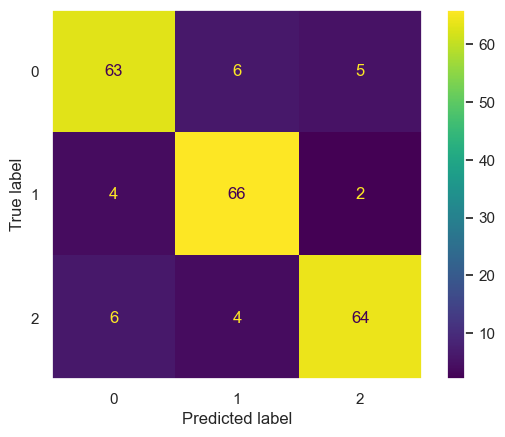
evaluate_ovr = evaluate_classifier(model_ovr, X_test, y_test, "weighted", True)Accuracy : 0.877
Precision: 0.878
Recall : 0.877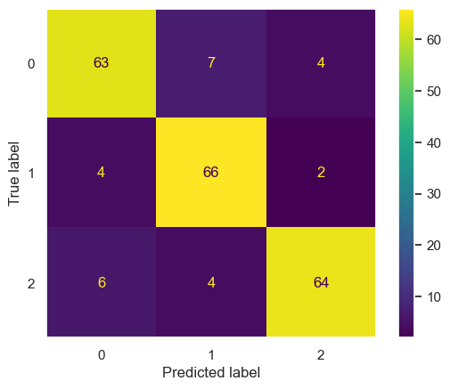
def compute_roc_curves(y_true_bin, y_pred_proba, n_classes, method_name):
fpr = {}
tpr = {}
roc_auc = {}
for i in range(n_classes):
# ROC pour la classe i
fpr[i], tpr[i], _ = roc_curve(y_true_bin[:, i], y_pred_proba[:, i])
roc_auc[i] = auc(fpr[i], tpr[i])
# Courbe moyenne macro
fpr["macro"] = np.linspace(0, 1, 100)
tpr["macro"] = np.zeros(100)
for i in range(n_classes):
tpr["macro"] += np.interp(fpr["macro"], fpr[i], tpr[i])
tpr["macro"] /= n_classes
roc_auc["macro"] = auc(fpr["macro"], tpr["macro"])
return fpr, tpr, roc_aucy_pred_proba_multinom = evaluate_multinom["y_pred_proba"]
y_pred_proba_ovr = evaluate_ovr["y_pred_proba"]
# Labels binaires pour la courbe ROC
n_classes = len(np.unique(y_train))
y_test_bin = label_binarize(y_test, classes=np.unique(y_train))
fpr_m, tpr_m, auc_m = compute_roc_curves(y_test_bin, y_pred_proba_multinom, n_classes, "Multinomial")
fpr_o, tpr_o, auc_o = compute_roc_curves(y_test_bin, y_pred_proba_ovr, n_classes, "OneVsRest")On compare d’abord classe par classe les résultats des deux types de régressions, multiclasse et OneVsRest.
n_classes = len(auc_m) - 1 # On exclut la clé "macro"
cols = 2
rows = (n_classes + 1) // cols
fig, axes = plt.subplots(rows, cols, figsize=(15, 5 * rows))
axes = axes.flatten()
for i in range(n_classes):
ax = axes[i]
# Courbe multiclasse
ax.plot(fpr_m[i], tpr_m[i], label=f'Multinomiale (AUC = {auc_m[i]:0.2f})', linewidth=2)
# Courbe OneVsRest
ax.plot(fpr_o[i], tpr_o[i], label=f'OneVsRest (AUC = {auc_o[i]:0.2f})', linewidth=2, linestyle='--')
# Diagonale
ax.plot([0, 1], [0, 1], 'k:', linewidth=1)
ax.set_title(f'Classe {i}')
ax.set_xlabel('Taux de faux positifs (FPR)')
ax.set_ylabel('Taux de vrais positifs (TPR)')
ax.legend(loc='lower right')
ax.grid(alpha=0.3)
# Masquer les subplots vides
for j in range(n_classes, len(axes)):
fig.delaxes(axes[j])
plt.tight_layout()
plt.show()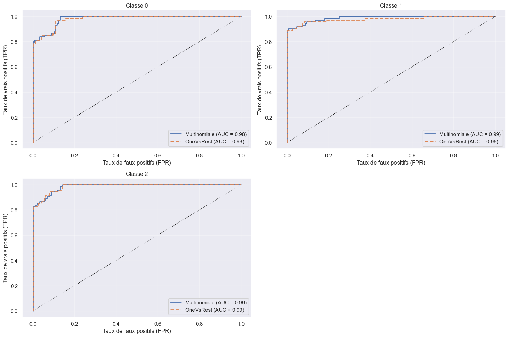
Les deux méthodes de régressions fournissent des résultats équivalents, les courbes sont superposées, il n’y en n’a pas une très clairement au dessus de l’autre dans chacun des trois cas.
On affiche ensuite les ROC-curve pour comparer les résultats des différentes classes, méthode par méthode.
fig, (ax1, ax2) = plt.subplots(1, 2, figsize=(18, 6))
# Méthode multiclasse
for i in range(n_classes):
ax1.plot(fpr_m[i], tpr_m[i], linewidth=1, alpha=0.6, label=f'Classe {i}')
ax1.plot(fpr_m["macro"], tpr_m["macro"],
label=f'Moyenne Macro (AUC = {auc_m["macro"]:0.2f})',
color='black', linestyle=':', linewidth=2)
ax1.plot([0, 1], [0, 1], 'k:', linewidth=1)
ax1.set_title('Courbes ROC - Méthode Multiclasse')
ax1.set_xlabel('Taux de faux positifs (FPR)')
ax1.set_ylabel('Taux de vrais positifs (TPR)')
ax1.legend(loc='lower right', fontsize='small')
ax1.grid(alpha=0.3)
# Méthode OneVsRest
for i in range(n_classes):
ax2.plot(fpr_o[i], tpr_o[i], linewidth=1, alpha=0.6, label=f'Classe {i}')
ax2.plot(fpr_o["macro"], tpr_o["macro"],
label=f'Moyenne Macro (AUC = {auc_o["macro"]:0.2f})',
color='black', linestyle=':', linewidth=2)
ax2.plot([0, 1], [0, 1], 'k:', linewidth=1)
ax2.set_title('Courbes ROC - Méthode OneVsRest')
ax2.set_xlabel('Taux de faux positifs (FPR)')
ax2.set_ylabel('Taux de vrais positifs (TPR)')
ax2.legend(loc='lower right', fontsize='small')
ax2.grid(alpha=0.3)
plt.tight_layout()
plt.show()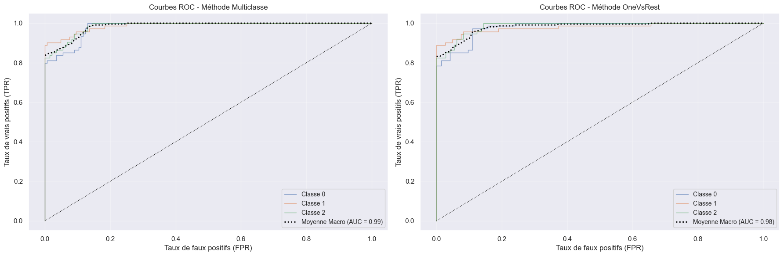
Les résultats des prédictions sont pour les deux méthodes, les meilleurs s’agissant de la classe 1 et les moins bons s’agissant de la classe 0.
Régression Lasso (pénalisation l1)
Les résultats de la régression logistique avec toutes les variables et sans pénalisation sont très bons. Cependant, il peut être intéressant de rechercher un modèle plus parcimonieux, n’incluant que les variables ayant la plus grande influence sur le niveau de stress. On effectue donc une régression logistique avec pénalisation l1 (Lasso), pour mettre directement les variables les moins informatives à zéro.
La fonction LogisticRegression ne permet pas de combiner une pénalisation l1 avec une approche multi-classe où l’on compare chacune des classes avec le solver liblinear. On adopte donc la stratégie ‘one vs the rest’, qui prend une valeur de la variable ‘niveau_stress’ comme référence. On a vu précédemment que cette stratégie, dans le cas sans pénalisation, fournissait des résultats semblables à la méthode multiclasse.
C_l=0.01
model_lasso=OneVsRestClassifier(LogisticRegression(penalty='l1', C=C_l, max_iter=1000, solver='liblinear', random_state=RANDOM_STATE))
model_lasso.fit(X_train, y_train)OneVsRestClassifier(estimator=LogisticRegression(C=0.01, max_iter=1000,
penalty='l1', random_state=42,
solver='liblinear'))In a Jupyter environment, please rerun this cell to show the HTML representation or trust the notebook. On GitHub, the HTML representation is unable to render, please try loading this page with nbviewer.org.
Parameters
| estimator | LogisticRegre...r='liblinear') | |
| n_jobs | None | |
| verbose | 0 |
LogisticRegression(C=0.01, max_iter=1000, penalty='l1', random_state=42,
solver='liblinear')Parameters
| penalty | 'l1' | |
| dual | False | |
| tol | 0.0001 | |
| C | 0.01 | |
| fit_intercept | True | |
| intercept_scaling | 1 | |
| class_weight | None | |
| random_state | 42 | |
| solver | 'liblinear' | |
| max_iter | 1000 | |
| multi_class | 'deprecated' | |
| verbose | 0 | |
| warm_start | False | |
| n_jobs | None | |
| l1_ratio | None |
df_coef_lasso = df_coef(model_lasso)
vars_non_zero = (df_coef_lasso != 0).any(axis=0)
nb_vars_non_zero = vars_non_zero.sum()
print("======= Résultats sur l'ensemble des trois régressions =======")
print("Nombre de variables non nulles :", nb_vars_non_zero)
print("Nombre total de variables autres que celle reliée au stress: ", stress.shape[1]-1)
print("Variables sélectionnées : ", df_coef_lasso.columns[vars_non_zero])
print("Variables mises de côte : ", df_coef_lasso.columns[~vars_non_zero])
print("\n")
print("======= Résultats détaillés par régression (OneVsRest) =======\n")
for i, row in df_coef_lasso.iterrows():
print(f"--- Régression pour la classe : {i} ---")
vars_non_zero_i = row != 0
nb_vars_non_zero_i = vars_non_zero_i.sum()
print("Nombre de variables non nulles :", nb_vars_non_zero_i)
selected_vars = vars_non_zero[vars_non_zero_i].index.tolist()
rejected_vars = vars_non_zero[~vars_non_zero_i].index.tolist()
print("Variables sélectionnées : ", selected_vars)
print("Variables mises de côte : ", rejected_vars)
print("\n")======= Résultats sur l'ensemble des trois régressions =======
Nombre de variables non nulles : 14
Nombre total de variables autres que celle reliée au stress: 20
Variables sélectionnées : Index(['niveau_anxiete', 'estime_de_soi', 'depression', 'maux_de_tete',
'tension_arterielle', 'qualite_sommeil', 'securite',
'besoins_elementaires', 'reussite_academique', 'relation_prof_etudiant',
'perspective_insertion_professionnelle', 'pression_des_paires',
'activites_extrascolaires', 'harcelement'],
dtype='object')
Variables mises de côte : Index(['historique_sante_mentale', 'problem_respiratoire', 'niveau_bruit',
'conditions_vie', 'charge_travail', 'soutien_social'],
dtype='object')
======= Résultats détaillés par régression (OneVsRest) =======
--- Régression pour la classe : 0 ---
Nombre de variables non nulles : 6
Variables sélectionnées : ['niveau_anxiete', 'qualite_sommeil', 'securite', 'besoins_elementaires', 'reussite_academique', 'relation_prof_etudiant']
Variables mises de côte : ['estime_de_soi', 'historique_sante_mentale', 'depression', 'maux_de_tete', 'tension_arterielle', 'problem_respiratoire', 'niveau_bruit', 'conditions_vie', 'charge_travail', 'perspective_insertion_professionnelle', 'soutien_social', 'pression_des_paires', 'activites_extrascolaires', 'harcelement']
--- Régression pour la classe : 1 ---
Nombre de variables non nulles : 2
Variables sélectionnées : ['tension_arterielle', 'relation_prof_etudiant']
Variables mises de côte : ['niveau_anxiete', 'estime_de_soi', 'historique_sante_mentale', 'depression', 'maux_de_tete', 'qualite_sommeil', 'problem_respiratoire', 'niveau_bruit', 'conditions_vie', 'securite', 'besoins_elementaires', 'reussite_academique', 'charge_travail', 'perspective_insertion_professionnelle', 'soutien_social', 'pression_des_paires', 'activites_extrascolaires', 'harcelement']
--- Régression pour la classe : 2 ---
Nombre de variables non nulles : 8
Variables sélectionnées : ['estime_de_soi', 'depression', 'maux_de_tete', 'tension_arterielle', 'perspective_insertion_professionnelle', 'pression_des_paires', 'activites_extrascolaires', 'harcelement']
Variables mises de côte : ['niveau_anxiete', 'historique_sante_mentale', 'qualite_sommeil', 'problem_respiratoire', 'niveau_bruit', 'conditions_vie', 'securite', 'besoins_elementaires', 'reussite_academique', 'charge_travail', 'relation_prof_etudiant', 'soutien_social']
df_coef_lasso| niveau_anxiete | estime_de_soi | historique_sante_mentale | depression | maux_de_tete | tension_arterielle | qualite_sommeil | problem_respiratoire | niveau_bruit | conditions_vie | securite | besoins_elementaires | reussite_academique | charge_travail | relation_prof_etudiant | perspective_insertion_professionnelle | soutien_social | pression_des_paires | activites_extrascolaires | harcelement | |
|---|---|---|---|---|---|---|---|---|---|---|---|---|---|---|---|---|---|---|---|---|
| 0 | -0.136208 | 0.000000 | 0.0 | 0.00000 | 0.000000 | 0.000000 | 0.146307 | 0.0 | 0.0 | 0.0 | 0.280639 | 0.339282 | 0.3565 | 0.0 | 0.148095 | 0.000000 | 0.0 | 0.000000 | 0.000000 | 0.000000 |
| 1 | 0.000000 | 0.000000 | 0.0 | 0.00000 | 0.000000 | -1.025928 | 0.000000 | 0.0 | 0.0 | 0.0 | 0.000000 | 0.000000 | 0.0000 | 0.0 | -0.172641 | 0.000000 | 0.0 | 0.000000 | 0.000000 | 0.000000 |
| 2 | 0.000000 | -0.340922 | 0.0 | 0.06138 | 0.088674 | 0.510733 | 0.000000 | 0.0 | 0.0 | 0.0 | 0.000000 | 0.000000 | 0.0000 | 0.0 | 0.000000 | 0.019242 | 0.0 | 0.260706 | 0.120921 | 0.186764 |
evaluate_lasso = evaluate_classifier(model_lasso, X_test, y_test, "weighted", True)Accuracy : 0.886
Precision: 0.896
Recall : 0.886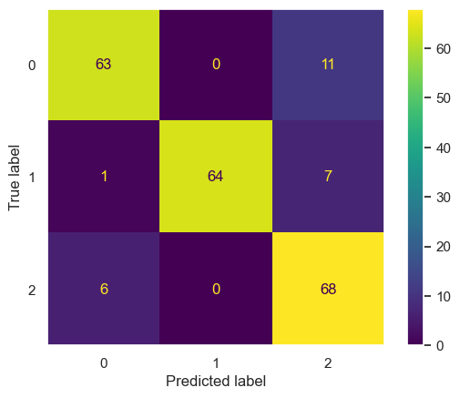
On améliore très légèrement les performances du modèle, en comparaison avec la régression non pénalisée, avec une précision passée de \(0.877\) à \(0.886\).
y_pred_proba_lasso = evaluate_lasso["y_pred_proba"]
y_pred_proba_ovr = evaluate_ovr["y_pred_proba"]
# Labels binaires pour la courbe ROC
n_classes = len(np.unique(y_train))
y_test_bin = label_binarize(y_test, classes=np.unique(y_train))
fpr_l, tpr_l, auc_l = compute_roc_curves(y_test_bin, y_pred_proba_lasso, n_classes, "Multinomial")
fpr_o, tpr_o, auc_o = compute_roc_curves(y_test_bin, y_pred_proba_ovr, n_classes, "OneVsRest")n_classes = len(auc_l) - 1 # On exclut la clé "macro"
cols = 2
rows = (n_classes + 1) // cols
fig, axes = plt.subplots(rows, cols, figsize=(15, 5 * rows))
axes = axes.flatten()
for i in range(n_classes):
ax = axes[i]
# Courbe Lasso
ax.plot(fpr_l[i], tpr_l[i], label=f'Lasso (AUC = {auc_l[i]:0.2f})', linewidth=2)
# Courbe OneVsRest
ax.plot(fpr_o[i], tpr_o[i], label=f'OneVsRest (AUC = {auc_o[i]:0.2f})', linewidth=2, linestyle='--')
# Diagonale
ax.plot([0, 1], [0, 1], 'k:', linewidth=1)
ax.set_title(f'Classe {i}')
ax.set_xlabel('Taux de faux positifs (FPR)')
ax.set_ylabel('Taux de vrais positifs (TPR)')
ax.legend(loc='lower right')
ax.grid(alpha=0.3)
# Masquer les subplots vides
for j in range(n_classes, len(axes)):
fig.delaxes(axes[j])
plt.tight_layout()
plt.show()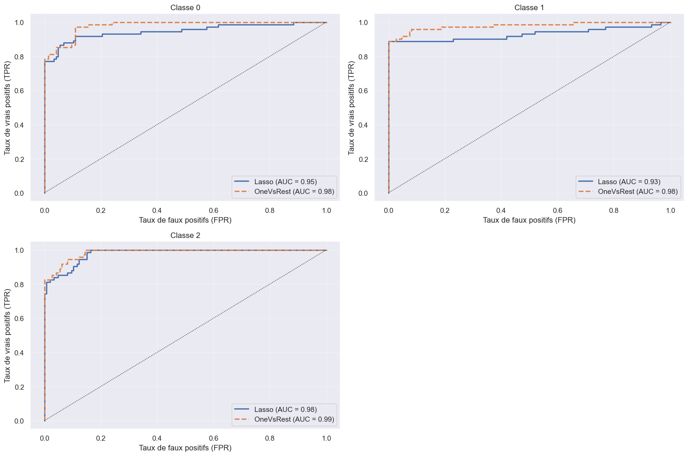
Les résultats sont dans les trois cas meilleurs pour le modèle OneVsRest non pénalisé : la courbe ROC est au dessus de celle associée au modèle Lasso.
Validation croisée
On réalise des régressions par validation croisée afin de choisir au mieux la constante de pénalisation \(C\) associée au modèle Lasso.
cv_results_ovr = cross_validate(model_ovr, X_train, y_train, cv=8)
cv_results_ovr{'fit_time': array([0.03812718, 0.02605653, 0.02680516, 0.03135896, 0.02283216,
0.02475524, 0.02759528, 0.0267334 ]),
'score_time': array([0.00319099, 0.00374198, 0.00399232, 0.00482416, 0.00319862,
0.003232 , 0.00270581, 0.00397134]),
'test_score': array([0.9 , 0.89090909, 0.89090909, 0.91818182, 0.86363636,
0.87272727, 0.84545455, 0.86363636])}cv_results_multinom = cross_validate(model_multinom, X_train, y_train, cv=8)
cv_results_multinom{'fit_time': array([0.02769852, 0.02052307, 0.01871777, 0.01966071, 0.02144718,
0.02315259, 0.02005649, 0.02136517]),
'score_time': array([0.00289869, 0.00188208, 0.00173283, 0.00199175, 0.00165629,
0.0027895 , 0.00257277, 0.00266743]),
'test_score': array([0.9 , 0.89090909, 0.9 , 0.91818182, 0.86363636,
0.87272727, 0.83636364, 0.86363636])}cv_results_lasso = cross_validate(model_lasso, X_train, y_train, cv=8)
cv_results_lasso{'fit_time': array([0.01843357, 0.01526928, 0.00867105, 0.01685166, 0.0135026 ,
0.01209378, 0.01106668, 0.01997018]),
'score_time': array([0.00458932, 0.00341201, 0.00226688, 0.00293398, 0.00261807,
0.00256681, 0.00451779, 0.00518608]),
'test_score': array([0.90909091, 0.87272727, 0.90909091, 0.92727273, 0.83636364,
0.85454545, 0.85454545, 0.9 ])}On donne les intervalles de confiance de l’accuracy score pour chacun des trois modèles de régression. Pour les deux premiers, sans pénalisation, les résultats sont presque égaux, avec une incertitude plus élevée pour la régression multiclasse que OneVsRest. Si l’accuracy score semble plus élevé pour la régression Lasso, en réalité l’intervalle de confiance est également plus grand ie le modèle est moins précis.
scores = {'Ovr' : cv_results_ovr["test_score"], 'Multinomial': cv_results_multinom["test_score"], 'Lasso': cv_results_lasso["test_score"]}
for method in scores.keys():
print("The mean cross-validation accuracy for " f"{method}" " is: "
f"{scores[method].mean():.3f} ± {scores[method].std():.3f}")The mean cross-validation accuracy for Ovr is: 0.881 ± 0.022
The mean cross-validation accuracy for Multinomial is: 0.881 ± 0.025
The mean cross-validation accuracy for Lasso is: 0.883 ± 0.031# Choix de la constante de pénalisation C
C_grid = np.logspace(-4, 1, 14) # Grille de valeur pour C
cv = 8
# Modèle de régression logistique avec pénalité l1
# Validation croisée pour le choix automatique de la constante de pénalité C
model_lasso_cv = OneVsRestClassifier(LogisticRegressionCV(penalty='l1', tol=1e-3, Cs=C_grid, cv=8,
solver='liblinear', scoring='roc_auc', random_state=RANDOM_STATE))
model_lasso_cv.fit(X_train, y_train)
print(f"Nombre de classes détectées : {len(model_lasso_cv.estimators_)}") # Vérification
for i, estimator in enumerate(model_lasso_cv.estimators_):
print(f"\n--- Classe {i} (ou classe '{model_lasso_cv.classes_[i]}') ---")
scores_bruts = estimator.scores_
key = 1
tableau_scores = scores_bruts[key]
n_folds, n_Cs = tableau_scores.shape
print(f"Forme détectée : {tableau_scores.shape}")
mean_scores = np.mean(tableau_scores, axis=0)
# print(f"Nombre de valeurs C : {len(mean_scores)}") # Vérification
print(f"Meilleur score ROC-AUC moyen : {np.max(mean_scores):.4f}")
print(f"Index du meilleur C : {np.argmax(mean_scores)}")
print(f"Valeur du meilleur C : {C_grid[np.argmax(mean_scores)]}")
# Vérification : C choisi par le modèle
print(f"C choisi automatiquement par le modèle (C_[0]) : {estimator.C_[0]}")
Nombre de classes détectées : 3
--- Classe 0 (ou classe '0') ---
Forme détectée : (8, 14)
Meilleur score ROC-AUC moyen : 0.9813
Index du meilleur C : 11
Valeur du meilleur C : 1.7012542798525891
C choisi automatiquement par le modèle (C_[0]) : 1.7012542798525891
--- Classe 1 (ou classe '1') ---
Forme détectée : (8, 14)
Meilleur score ROC-AUC moyen : 0.9704
Index du meilleur C : 10
Valeur du meilleur C : 0.701703828670383
C choisi automatiquement par le modèle (C_[0]) : 0.701703828670383
--- Classe 2 (ou classe '2') ---
Forme détectée : (8, 14)
Meilleur score ROC-AUC moyen : 0.9845
Index du meilleur C : 11
Valeur du meilleur C : 1.7012542798525891
C choisi automatiquement par le modèle (C_[0]) : 1.7012542798525891evaluate_lasso_cv = evaluate_classifier(model_lasso_cv, X_test, y_test, "weighted", True)Accuracy : 0.877
Precision: 0.878
Recall : 0.877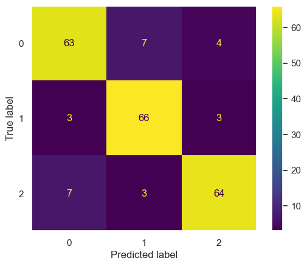
y_pred_proba_lasso_cv = evaluate_lasso_cv["y_pred_proba"]
# Labels binaires pour la courbe ROC
n_classes = len(np.unique(y_train))
y_test_bin = label_binarize(y_test, classes=np.unique(y_train))
fpr_lcv, tpr_lcv, auc_lcv = compute_roc_curves(y_test_bin, y_pred_proba_lasso_cv, n_classes, "Lasso cv")n_classes = len(auc_l) - 1 # On exclut la clé "macro"
cols = 2
rows = (n_classes + 1) // cols
fig, axes = plt.subplots(rows, cols, figsize=(15, 5 * rows))
axes = axes.flatten()
for i in range(n_classes):
ax = axes[i]
# Courbe Lasso
ax.plot(fpr_l[i], tpr_l[i], label=f'Lasso (AUC = {auc_l[i]:0.2f})', linewidth=2)
# Courbe OneVsRest
ax.plot(fpr_o[i], tpr_o[i], label=f'OneVsRest (AUC = {auc_o[i]:0.2f})', linewidth=2, linestyle='--')
# Courbe Lasso CV
ax.plot(fpr_lcv[i], tpr_lcv[i], label=f'Lasso CV (AUC = {auc_lcv[i]:0.2f})', linewidth=2)
# Diagonale
ax.plot([0, 1], [0, 1], 'k:', linewidth=1)
ax.set_title(f'Classe {i}')
ax.set_xlabel('Taux de faux positifs (FPR)')
ax.set_ylabel('Taux de vrais positifs (TPR)')
ax.legend(loc='lower right')
ax.grid(alpha=0.3)
# Masquer les subplots vides
for j in range(n_classes, len(axes)):
fig.delaxes(axes[j])
plt.tight_layout()
plt.show()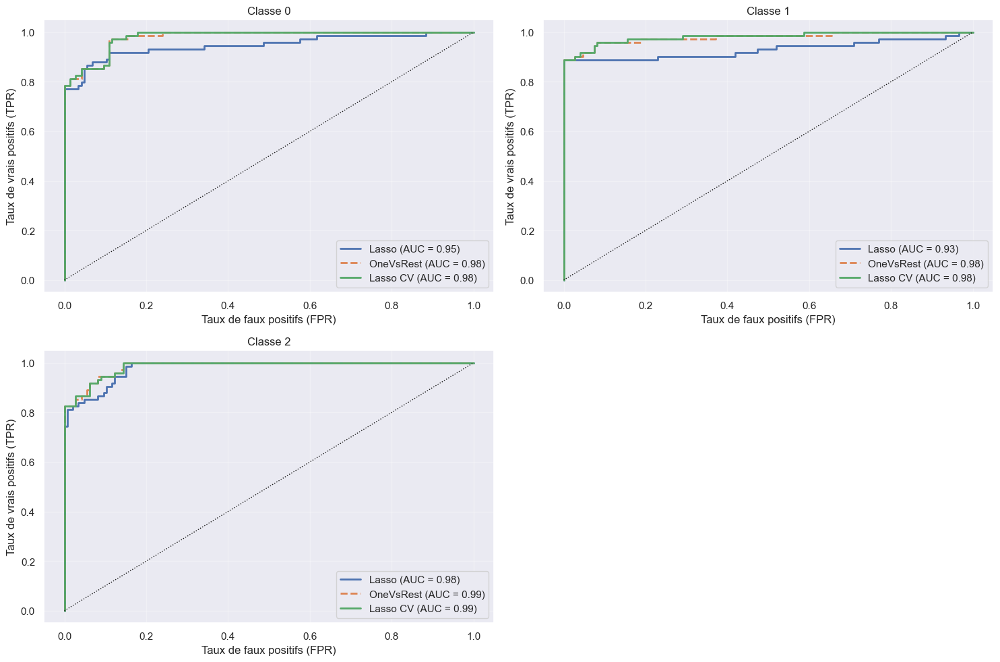
Le modèle Lasso avec constante choisie par validation croisée a un score AUC aussi bon que le modèle OneVsRest dans les trois cas. On dispose donc d’un modèle plus parcimonieux avec des performances équivalentes au modèle incluant toutes les variables explicatives.
AUC_lasso_cv = roc_auc_score(y_test, y_pred_proba_lasso_cv, multi_class='ovr', average='macro')
AUC_ovr = roc_auc_score(y_test, y_pred_proba_ovr, multi_class='ovr', average='macro')
AUC_lasso = roc_auc_score(y_test, y_pred_proba_lasso, multi_class='ovr', average='macro')
print(f"AUC no penalty: {AUC_ovr:.5f}")
print(f"AUC Lasso: {AUC_lasso:.5f}")
print(f"AUC Lasso-CV: {AUC_lasso_cv:.5f}")AUC no penalty: 0.98142
AUC Lasso: 0.95279
AUC Lasso-CV: 0.98258Arbres de classification
from sklearn.tree import DecisionTreeRegressor
from sklearn import tree
from sklearn.ensemble import RandomForestRegressor
from sklearn.metrics import mean_absolute_percentage_error as mape
from sklearn.metrics import root_mean_squared_error as rmse
from sklearn.model_selection import RandomizedSearchCV
from scipy.stats import randint, uniform
import time as tmdef fit_and_predict_error(model, x_train, y_train, x_test, y_test):
start_time = tm.time()
model.fit(x_train, y_train)
predict_train = model.predict(x_train)
predict_test = model.predict(x_test)
end_time = tm.time()
mape_test = mape(y_test, predict_test)*100
rmse_test = rmse(y_test, predict_test)
return {'train' : predict_train, 'test' : predict_test,
'mape_train' : mape(y_train, predict_train)*100,
'mape_test' : mape_test,
'rmse_train' : rmse(y_train, predict_train),
'rmse_test' : rmse_test,
'time' : end_time-start_time}def add_error(model_out, model_name, df):
return df._append({'Model' : model_name,
'MAPE test' : model_out['mape_test'],
'RMSE test' : model_out['rmse_test'],
'MAPE train' : model_out['mape_train'],
'RMSE train' : model_out['rmse_train'],
'CPU time' : model_out['time']}, ignore_index=True)# Création d'un dataframe pour stocker les erreurs des différents modèles que l'on s'apprête à tester
df_errors = pd.DataFrame()regressor_cart = DecisionTreeRegressor(random_state=RANDOM_STATE)
cart = fit_and_predict_error(regressor_cart, X_train, y_train, X_test, y_test)
df_errors = add_error(cart, 'Cart', df_errors)df_errors| Model | MAPE test | RMSE test | MAPE train | RMSE train | CPU time | |
|---|---|---|---|---|---|---|
| 0 | Cart | 3.480054e+16 | 0.495434 | 0.0 | 0.0 | 0.016645 |
Ici l’on n’impose pas de limite de profondeur à l’arbre de classification : chaque feuille contient exactement un échantillon de odnnées du train (ou plusieurs identiques). Il classifie donc parfaitement sur le train. Les résultats sur l’échantillon test sont intrigants : les deux erreurs ne sont pas du tout du même ordre de grandeur. Sans doute une division par zéro est effectuée dans le calcul du MAPE, ce qui fait exploser sa valeur. On n’est pas censés s’attendre à d’excellents résultats dans ce cas sur la partie test, étant donné que l’arbre overfit les données train.
df_importances = pd.DataFrame({
'Variable': X_train.columns,
'Importance': regressor_cart.feature_importances_})
df_importances = df_importances.sort_values(by='Importance', ascending=False).reset_index(drop=True)
df_importances| Variable | Importance | |
|---|---|---|
| 0 | reussite_academique | 0.547763 |
| 1 | qualite_sommeil | 0.187492 |
| 2 | relation_prof_etudiant | 0.055462 |
| 3 | besoins_elementaires | 0.036855 |
| 4 | estime_de_soi | 0.031106 |
| 5 | problem_respiratoire | 0.021761 |
| 6 | securite | 0.019991 |
| 7 | charge_travail | 0.014554 |
| 8 | niveau_bruit | 0.014332 |
| 9 | harcelement | 0.012289 |
| 10 | conditions_vie | 0.011958 |
| 11 | soutien_social | 0.010610 |
| 12 | niveau_anxiete | 0.010151 |
| 13 | pression_des_paires | 0.008305 |
| 14 | depression | 0.006932 |
| 15 | maux_de_tete | 0.005311 |
| 16 | perspective_insertion_professionnelle | 0.005128 |
| 17 | historique_sante_mentale | 0.000000 |
| 18 | tension_arterielle | 0.000000 |
| 19 | activites_extrascolaires | 0.000000 |
Pour rappel, avec le modèle de régression Lasso, on avait en regroupant les résultats des trois régressions possibles :
Variables sélectionnées : Index([‘niveau_anxiete’, ‘estime_de_soi’, ‘depression’, ‘maux_de_tete’, ‘tension_arterielle’, ‘qualite_sommeil’, ‘securite’, ‘besoins_elementaires’, ‘reussite_academique’, ‘relation_prof_etudiant’, ‘perspective_insertion_professionnelle’, ‘pression_des_paires’, ‘activites_extrascolaires’, ‘harcelement’], dtype=‘object’)
Variables mises de côte : Index([‘historique_sante_mentale’, ‘problem_respiratoire’, ‘niveau_bruit’, ‘conditions_vie’, ‘charge_travail’, ‘soutien_social’])
On observe quelques divergences : ici la variable relative aux problèmes respiratoires est la 5e plus importante, tandis qu’elle n’était pas sélectionnée par la régression Lasso. Les activités extrascolaires et la tension artérielle ont un niveau d’importance égal à zéro selon l’arbre de classification, tandis qu’elles étaient toutes deux sélectionnées par la régression Lasso.
On choisit dans la suite de considérer un dataset ‘X_S’ ne conservant que les cinq premières variables par ordre d’importance données ci-dessus.
print(f"Profondeur actuelle de l'arbre : {regressor_cart.tree_.max_depth}")
print(f"Nombre total de nœuds : {regressor_cart.tree_.node_count}")
print(f"Nombre de feuilles (nœuds terminaux) : {regressor_cart.tree_.n_leaves}")Profondeur actuelle de l'arbre : 13
Nombre total de nœuds : 125
Nombre de feuilles (nœuds terminaux) : 63# On modifie la profondeur de l'arbre pour voir l'impact sur les performances et limiter l'overfitting
max_depth = 10 # On passe dans un premier temps de 13 à 10
# On définit un ensemble de variables semblant expliquer le mieux le niveau de stress
variables_pertinentes = ['reussite_academique', 'qualite_sommeil', 'relation_prof_etudiant', 'besoins_elementaires', 'estime_de_soi', 'problem_respiratoire']
X_train_S = X_train[variables_pertinentes]
X_test_S = X_test[variables_pertinentes]
regressor_10 = DecisionTreeRegressor(max_depth = 10, random_state=RANDOM_STATE)
regressor_10_S = DecisionTreeRegressor(max_depth = 10, random_state=RANDOM_STATE)
cart_10 = fit_and_predict_error(regressor_10, X_train, y_train, X_test, y_test)
cart_10_S = fit_and_predict_error(regressor_10_S, X_train_S, y_train, X_test_S, y_test)
df_errors = add_error(cart_10, 'Cart, Depth 10', df_errors)
df_errors = add_error(cart_10_S, 'Cart S, Depth 10', df_errors)df_errors| Model | MAPE test | RMSE test | MAPE train | RMSE train | CPU time | |
|---|---|---|---|---|---|---|
| 0 | Cart | 3.480054e+16 | 0.495434 | 0.000000e+00 | 0.000000 | 0.016645 |
| 1 | Cart, Depth 10 | 3.195989e+16 | 0.483146 | 1.746345e+15 | 0.091471 | 0.008551 |
| 2 | Cart S, Depth 10 | 4.159006e+16 | 0.574561 | 1.128015e+15 | 0.093516 | 0.004987 |
Les deux résultats du MAPE semblent confirmer l’hypothèse d’une division par zéro. Nous ne considèrerons donc que le RMSE comme métrique d’erreur.
print("===== regressor_10 =====")
print('Observations par noeud', regressor_10.tree_.n_node_samples) # nb d'observations par noeud
print('Nombre de noeuds', regressor_10.tree_.node_count) # nb de noeuds
print(f"Nombre de feuilles (nœuds terminaux) : {regressor_10.tree_.n_leaves}")
print("")
print("===== regressor_10_S =====")
print('Observations par noeud', regressor_10_S.tree_.n_node_samples) # nb d'observations par noeud
print('Nombre de noeuds', regressor_10_S.tree_.node_count) # nb de noeuds
print(f"Nombre de feuilles (nœuds terminaux) : {regressor_10_S.tree_.n_leaves}")===== regressor_10 =====
Observations par noeud [880 578 273 253 248 3 1 2 245 5 3 2 1 2 20 13 6 4
2 7 4 2 2 3 7 3 4 3 1 305 15 1 14 6 3 3
1 2 8 290 9 4 5 2 3 281 6 4 2 275 4 1 3 271
267 8 6 1 5 2 259 6 253 10 243 4 302 51 41 21 2 19
11 3 2 1 8 5 1 4 3 8 6 2 1 1 20 3 2 1
17 7 2 1 1 5 10 7 3 1 2 10 5 3 2 5 251 249
2 1 1]
Nombre de noeuds 111
Nombre de feuilles (nœuds terminaux) : 56
===== regressor_10_S =====
Observations par noeud [880 578 273 253 7 3 1 2 4 3 1 246 244 2 1 1 20 13
12 9 7 1 6 4 2 1 1 2 3 2 1 1 7 5 1 4
2 2 1 1 2 305 15 1 14 2 12 6 6 5 4 1 1 290
4 286 8 1 7 2 1 1 5 278 251 1 250 2 248 247 5 242
1 27 7 2 5 3 2 1 2 1 1 20 19 17 9 8 2 1
302 51 41 21 17 14 5 3 2 1 1 9 5 3 2 1 2 4
1 3 3 1 2 4 20 15 6 5 1 9 8 1 7 5 2 1
1 1 5 4 2 2 1 10 6 4 2 1 1 4 1 3 1 2
251 249 2 1 1]
Nombre de noeuds 149
Nombre de feuilles (nœuds terminaux) : 75max_depth = 5
regressor_5 = DecisionTreeRegressor(max_depth=5, random_state=RANDOM_STATE)
regressor_5_S = DecisionTreeRegressor(max_depth=5, random_state=RANDOM_STATE)
cart_5 = fit_and_predict_error(regressor_5, X_train, y_train, X_test, y_test)
cart_5_S = fit_and_predict_error(regressor_5_S, X_train_S, y_train, X_test_S, y_test)
df_errors = add_error(cart_5, 'Cart, Depth 5', df_errors)
df_errors = add_error(cart_5_S, 'Cart S, Depth 5', df_errors)
df_errors| Model | MAPE test | RMSE test | MAPE train | RMSE train | CPU time | |
|---|---|---|---|---|---|---|
| 0 | Cart | 3.480054e+16 | 0.495434 | 0.000000e+00 | 0.000000 | 0.016645 |
| 1 | Cart, Depth 10 | 3.195989e+16 | 0.483146 | 1.746345e+15 | 0.091471 | 0.008551 |
| 2 | Cart S, Depth 10 | 4.159006e+16 | 0.574561 | 1.128015e+15 | 0.093516 | 0.004987 |
| 3 | Cart, Depth 5 | 3.911615e+16 | 0.494777 | 1.312860e+16 | 0.244892 | 0.008007 |
| 4 | Cart S, Depth 5 | 3.275259e+16 | 0.472454 | 1.422986e+16 | 0.259733 | 0.004647 |
print("===== regressor_5 =====")
print('Observations par noeud', regressor_5.tree_.n_node_samples) # nb d'observations par noeud
print('Nombre de noeuds', regressor_5.tree_.node_count) # nb de noeuds
print(f"Nombre de feuilles (nœuds terminaux) : {regressor_5.tree_.n_leaves}")
print("")
print("===== regressor_5_S =====")
print('Observations par noeud', regressor_5_S.tree_.n_node_samples) # nb d'observations par noeud
print('Nombre de noeuds', regressor_5_S.tree_.node_count) # nb de noeuds
print(f"Nombre de feuilles (nœuds terminaux) : {regressor_5_S.tree_.n_leaves}")===== regressor_5 =====
Observations par noeud [880 578 273 253 248 3 245 5 2 3 20 13 6 7 7 3 4 305
15 1 14 6 8 290 9 5 4 281 6 275 302 51 41 21 2 19
20 3 17 10 5 3 2 5 251 249 2 1 1]
Nombre de noeuds 49
Nombre de feuilles (nœuds terminaux) : 25
===== regressor_5_S =====
Observations par noeud [880 578 273 253 7 3 4 246 244 2 20 13 12 1 7 5 2 305
15 1 14 2 12 290 4 286 8 278 302 51 41 21 17 4 20 15
5 10 4 3 1 6 4 2 251 249 2 1 1]
Nombre de noeuds 49
Nombre de feuilles (nœuds terminaux) : 25tree.plot_tree(regressor_5_S, fontsize=10, feature_names=X_train_S.columns.values)
plt.rcParams["figure.figsize"] = (20,10)
plt.show()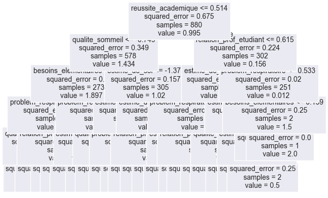
# Bagging
cart = DecisionTreeRegressor(max_depth=10)
bagging_S = BaggingRegressor(estimator=cart, oob_score=True, n_estimators=100, random_state=RANDOM_STATE)
bagging_small = fit_and_predict_error(bagging_S, X_train_S, y_train, X_test_S, y_test)
df_errors = add_error(bagging_small, 'Bagging Cart depth 10 S', df_errors)
bagging = BaggingRegressor(estimator=cart, oob_score=True, n_estimators=100, random_state=RANDOM_STATE)
bagging_large = fit_and_predict_error(bagging, X_train, y_train, X_test, y_test)
df_errors = add_error(bagging_large, 'Bagging Cart depth 10', df_errors)
df_errors| Model | MAPE test | RMSE test | MAPE train | RMSE train | CPU time | |
|---|---|---|---|---|---|---|
| 0 | Cart | 3.480054e+16 | 0.495434 | 0.000000e+00 | 0.000000 | 0.016645 |
| 1 | Cart, Depth 10 | 3.195989e+16 | 0.483146 | 1.746345e+15 | 0.091471 | 0.008551 |
| 2 | Cart S, Depth 10 | 4.159006e+16 | 0.574561 | 1.128015e+15 | 0.093516 | 0.004987 |
| 3 | Cart, Depth 5 | 3.911615e+16 | 0.494777 | 1.312860e+16 | 0.244892 | 0.008007 |
| 4 | Cart S, Depth 5 | 3.275259e+16 | 0.472454 | 1.422986e+16 | 0.259733 | 0.004647 |
| 5 | Bagging Cart depth 10 S | 3.295335e+16 | 0.409043 | 1.049255e+16 | 0.148164 | 0.272376 |
| 6 | Bagging Cart depth 10 | 3.539262e+16 | 0.393214 | 1.064340e+16 | 0.139842 | 0.355674 |
# Random Forest
rf_s = RandomForestRegressor(oob_score=True, random_state=RANDOM_STATE)
rf = RandomForestRegressor(oob_score=True, random_state=RANDOM_STATE)
rf_all = fit_and_predict_error(rf, X_train, y_train, X_test, y_test)
rf_small = fit_and_predict_error(rf_s, X_train_S, y_train, X_test_S, y_test)
df_errors = add_error(rf_small, 'Default Random Forest S', df_errors)
df_errors = add_error(rf_all, 'Default Random Forest', df_errors)
df_errors| Model | MAPE test | RMSE test | MAPE train | RMSE train | CPU time | |
|---|---|---|---|---|---|---|
| 0 | Cart | 3.480054e+16 | 0.495434 | 0.000000e+00 | 0.000000 | 0.016645 |
| 1 | Cart, Depth 10 | 3.195989e+16 | 0.483146 | 1.746345e+15 | 0.091471 | 0.008551 |
| 2 | Cart S, Depth 10 | 4.159006e+16 | 0.574561 | 1.128015e+15 | 0.093516 | 0.004987 |
| 3 | Cart, Depth 5 | 3.911615e+16 | 0.494777 | 1.312860e+16 | 0.244892 | 0.008007 |
| 4 | Cart S, Depth 5 | 3.275259e+16 | 0.472454 | 1.422986e+16 | 0.259733 | 0.004647 |
| 5 | Bagging Cart depth 10 S | 3.295335e+16 | 0.409043 | 1.049255e+16 | 0.148164 | 0.272376 |
| 6 | Bagging Cart depth 10 | 3.539262e+16 | 0.393214 | 1.064340e+16 | 0.139842 | 0.355674 |
| 7 | Default Random Forest S | 3.275345e+16 | 0.406910 | 9.575267e+15 | 0.137692 | 0.184231 |
| 8 | Default Random Forest | 3.504619e+16 | 0.393700 | 1.012286e+16 | 0.135167 | 0.286945 |
# Evolution de l'erreur - small
K = rf_s.n_estimators
prev_test = np.zeros((len(X_test_S), K))
errEvol = np.zeros(K)
for k in range(K):
prev_test[:, k] = rf_s.estimators_[k].predict(X_test_S.values)
pred_mean_k = prev_test[:, : (k+1)].mean(axis = 1)
errEvol[k] = rmse(y_test, pred_mean_k)
plt.plot(errEvol)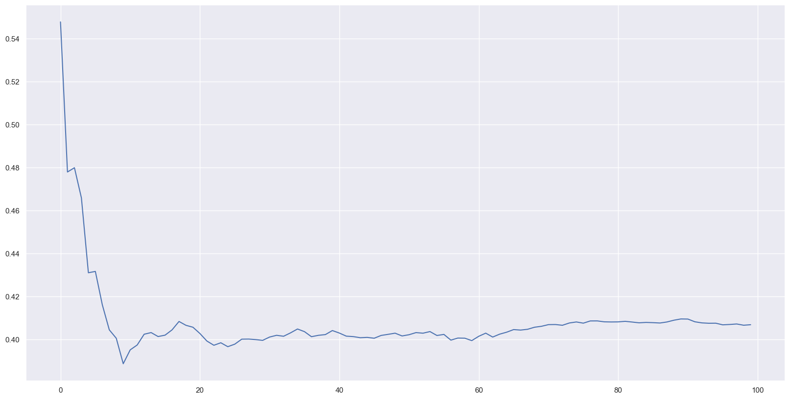
L’erreur est minimale pour \(5\leq n\leq10\) arbres dans la forêt. Seulement, cette dernière varie en fait très fortement jusqu’à \(n \simeq 20-25\). Nous évaluons donc le modèle pour deux forêts de \(n=25\) et \(n=60\) arbres respectivement. Dans le dernier cas, on choisit un nombre d’arbres suffisamment important pour être certains d’être dans une zone où l’erreur s’est stabilisée autour d’une valeur minimale (\(0.4\) environ). On diminue également le nombre d’arbres fixé par défaut à \(100\). Cependant, pour les mêmes arguments, on aurait aussi bien pu prendre comme comparaison de \(25\), \(n=40\) ou \(50\) arbres.
rf_S_60 = RandomForestRegressor(max_features= "sqrt", n_estimators= 60, oob_score=True, random_state=RANDOM_STATE)
rf_S_25 = RandomForestRegressor(max_features= "sqrt", n_estimators= 25, oob_score=True, random_state=RANDOM_STATE)
rf_small_60 = fit_and_predict_error(rf_S_60, X_train_S, y_train, X_test_S, y_test)
df_errors = add_error(rf_small_60, 'Random Forest 60 sqrt S', df_errors)
rf_small_25 = fit_and_predict_error(rf_S_25, X_train_S, y_train, X_test_S, y_test)
df_errors = add_error(rf_small_25, 'Random Forest 25 sqrt S', df_errors)
df_errors| Model | MAPE test | RMSE test | MAPE train | RMSE train | CPU time | |
|---|---|---|---|---|---|---|
| 0 | Cart | 3.480054e+16 | 0.495434 | 0.000000e+00 | 0.000000 | 0.016645 |
| 1 | Cart, Depth 10 | 3.195989e+16 | 0.483146 | 1.746345e+15 | 0.091471 | 0.008551 |
| 2 | Cart S, Depth 10 | 4.159006e+16 | 0.574561 | 1.128015e+15 | 0.093516 | 0.004987 |
| 3 | Cart, Depth 5 | 3.911615e+16 | 0.494777 | 1.312860e+16 | 0.244892 | 0.008007 |
| 4 | Cart S, Depth 5 | 3.275259e+16 | 0.472454 | 1.422986e+16 | 0.259733 | 0.004647 |
| 5 | Bagging Cart depth 10 S | 3.295335e+16 | 0.409043 | 1.049255e+16 | 0.148164 | 0.272376 |
| 6 | Bagging Cart depth 10 | 3.539262e+16 | 0.393214 | 1.064340e+16 | 0.139842 | 0.355674 |
| 7 | Default Random Forest S | 3.275345e+16 | 0.406910 | 9.575267e+15 | 0.137692 | 0.184231 |
| 8 | Default Random Forest | 3.504619e+16 | 0.393700 | 1.012286e+16 | 0.135167 | 0.286945 |
| 9 | Random Forest 60 sqrt S | 3.459583e+16 | 0.407268 | 9.936920e+15 | 0.137415 | 0.115691 |
| 10 | Random Forest 25 sqrt S | 3.373606e+16 | 0.407797 | 9.723681e+15 | 0.143223 | 0.043296 |
# Evolution de l'erreur - tout
K = rf.n_estimators
prev_test = np.zeros((len(X_test), K))
errEvol = np.zeros(K)
for k in range(K):
prev_test[:, k] = rf.estimators_[k].predict(X_test.values)
pred_mean_k = prev_test[:, : (k+1)].mean(axis = 1)
errEvol[k] = rmse(y_test, pred_mean_k)
plt.plot(errEvol)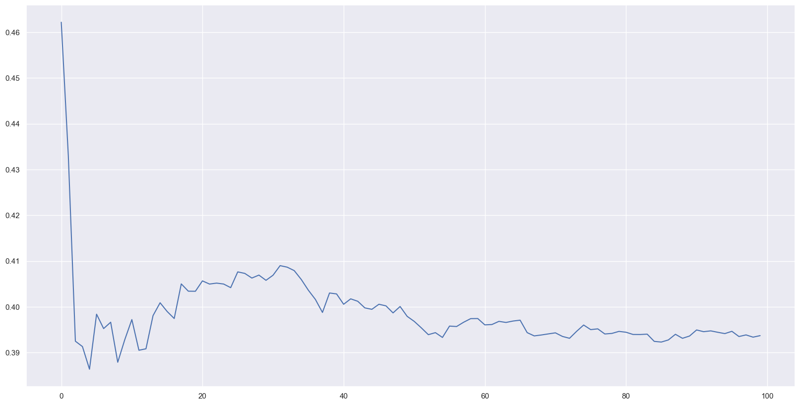
De même, on observe que l’erreur chute au delà de \(n \geq 5\) arbres et se stabilise pour \(n \geq 25\) arbres environ. Afin de comparer les résultats on estime aussi les erreurs pour deux forêts de \(60\) et \(25\) arbres.
rf_60 = RandomForestRegressor(max_features= "sqrt", n_estimators= 60, oob_score=True, random_state=RANDOM_STATE)
rf_25 = RandomForestRegressor(max_features= "sqrt", n_estimators= 25, oob_score=True, random_state=RANDOM_STATE)
rf_all_60 = fit_and_predict_error(rf_60, X_train, y_train, X_test, y_test)
df_errors = add_error(rf_all_60, 'Random Forest 60 sqrt', df_errors)
rf_all_25 = fit_and_predict_error(rf_25, X_train, y_train, X_test, y_test)
df_errors = add_error(rf_all_25, 'Random Forest 25 sqrt', df_errors)
df_errors| Model | MAPE test | RMSE test | MAPE train | RMSE train | CPU time | |
|---|---|---|---|---|---|---|
| 0 | Cart | 3.480054e+16 | 0.495434 | 0.000000e+00 | 0.000000 | 0.016645 |
| 1 | Cart, Depth 10 | 3.195989e+16 | 0.483146 | 1.746345e+15 | 0.091471 | 0.008551 |
| 2 | Cart S, Depth 10 | 4.159006e+16 | 0.574561 | 1.128015e+15 | 0.093516 | 0.004987 |
| 3 | Cart, Depth 5 | 3.911615e+16 | 0.494777 | 1.312860e+16 | 0.244892 | 0.008007 |
| 4 | Cart S, Depth 5 | 3.275259e+16 | 0.472454 | 1.422986e+16 | 0.259733 | 0.004647 |
| 5 | Bagging Cart depth 10 S | 3.295335e+16 | 0.409043 | 1.049255e+16 | 0.148164 | 0.272376 |
| 6 | Bagging Cart depth 10 | 3.539262e+16 | 0.393214 | 1.064340e+16 | 0.139842 | 0.355674 |
| 7 | Default Random Forest S | 3.275345e+16 | 0.406910 | 9.575267e+15 | 0.137692 | 0.184231 |
| 8 | Default Random Forest | 3.504619e+16 | 0.393700 | 1.012286e+16 | 0.135167 | 0.286945 |
| 9 | Random Forest 60 sqrt S | 3.459583e+16 | 0.407268 | 9.936920e+15 | 0.137415 | 0.115691 |
| 10 | Random Forest 25 sqrt S | 3.373606e+16 | 0.407797 | 9.723681e+15 | 0.143223 | 0.043296 |
| 11 | Random Forest 60 sqrt | 3.500525e+16 | 0.395824 | 1.042310e+16 | 0.138561 | 0.119845 |
| 12 | Random Forest 25 sqrt | 3.504619e+16 | 0.408207 | 1.027640e+16 | 0.147093 | 0.046962 |
La forêt de \(60\) arbres donne de meilleurs résultats que la forêt de \(25\) arbres dans les deux cas. Néanmoins la différence n’est pas flagrante si l’on considère les modèles S sur le jeu de données restreint.
On teste à présent l’approche par Gradient Boosting. Il s’agit dans un premier temps de fixer les hyperparamètres. Dans le cas où l’on ne considère que cinq variables explicatives, on observe qu’un arbre de profondeur \(5\) présente une erreur bien moins importante sur les données de test que pour l’arbre de profondeur \(10\). Pour le cas où l’on considère toutes les variables, les deux erreurs sont proches, celle pour l’arbre de profondeur \(10\) étant légèrement inférieure à celle de l’arbre de profondeur \(5\). On choisit donc max_depth=5 pour comparer les deux cas. On garde le nombre d’arbres/d’itérations à sa valeur par défaut n_estimators = 100. De même, on conserve learning_rate=0.1 pour limiter l’overfitting.
# Boosting
gb_s = GradientBoostingRegressor(learning_rate=0.1, n_estimators=100, max_depth=5)
gb = GradientBoostingRegressor(learning_rate=0.1, n_estimators=100, max_depth=5)
gb_small = fit_and_predict_error(gb_s, X_train_S, y_train, X_test_S, y_test)
df_errors = add_error(gb_small, 'Gradient Boosting S n=100', df_errors)
gb_all = fit_and_predict_error(gb, X_train, y_train, X_test, y_test)
df_errors = add_error(gb_all, 'Gradient Boosting n=100', df_errors)
df_errors| Model | MAPE test | RMSE test | MAPE train | RMSE train | CPU time | |
|---|---|---|---|---|---|---|
| 0 | Cart | 3.480054e+16 | 0.495434 | 0.000000e+00 | 0.000000 | 0.016645 |
| 1 | Cart, Depth 10 | 3.195989e+16 | 0.483146 | 1.746345e+15 | 0.091471 | 0.008551 |
| 2 | Cart S, Depth 10 | 4.159006e+16 | 0.574561 | 1.128015e+15 | 0.093516 | 0.004987 |
| 3 | Cart, Depth 5 | 3.911615e+16 | 0.494777 | 1.312860e+16 | 0.244892 | 0.008007 |
| 4 | Cart S, Depth 5 | 3.275259e+16 | 0.472454 | 1.422986e+16 | 0.259733 | 0.004647 |
| 5 | Bagging Cart depth 10 S | 3.295335e+16 | 0.409043 | 1.049255e+16 | 0.148164 | 0.272376 |
| 6 | Bagging Cart depth 10 | 3.539262e+16 | 0.393214 | 1.064340e+16 | 0.139842 | 0.355674 |
| 7 | Default Random Forest S | 3.275345e+16 | 0.406910 | 9.575267e+15 | 0.137692 | 0.184231 |
| 8 | Default Random Forest | 3.504619e+16 | 0.393700 | 1.012286e+16 | 0.135167 | 0.286945 |
| 9 | Random Forest 60 sqrt S | 3.459583e+16 | 0.407268 | 9.936920e+15 | 0.137415 | 0.115691 |
| 10 | Random Forest 25 sqrt S | 3.373606e+16 | 0.407797 | 9.723681e+15 | 0.143223 | 0.043296 |
| 11 | Random Forest 60 sqrt | 3.500525e+16 | 0.395824 | 1.042310e+16 | 0.138561 | 0.119845 |
| 12 | Random Forest 25 sqrt | 3.504619e+16 | 0.408207 | 1.027640e+16 | 0.147093 | 0.046962 |
| 13 | Gradient Boosting S n=100 | 3.635318e+16 | 0.480844 | 2.028394e+15 | 0.038493 | 0.125958 |
| 14 | Gradient Boosting n=100 | 3.689394e+16 | 0.428966 | 3.896376e+14 | 0.007730 | 0.211952 |
def gradient_boosting(params, X_train, X_test, y_train, y_test, s):
gbc = GradientBoostingRegressor(random_state=RANDOM_STATE)
random_search = RandomizedSearchCV(estimator=gbc, param_distributions=params,
n_iter=50, cv=3, scoring='neg_root_mean_squared_error', n_jobs=-1, verbose=1, random_state=RANDOM_STATE)
random_search.fit(X_train, y_train)
best_gb = random_search.best_estimator_
gb_result = fit_and_predict_error(best_gb, X_train, y_train, X_test, y_test)
if s :
best_name = f"GB Optimisé S (n={random_search.best_params_['n_estimators']}, lr={random_search.best_params_['learning_rate']:.2f})"
else :
best_name = f"GB Optimisé (n={random_search.best_params_['n_estimators']}, lr={random_search.best_params_['learning_rate']:.2f})"
return best_name, gb_result
La prochaine fois que j’exécute le code, réécrire avant les résultats avec la fonction
# Sélection des hyperparamètres avec RandomizedSearchCV
param_dist = {
"n_estimators": randint(100, 500),
"learning_rate": uniform(0.01, 0.2),
"max_depth": randint(5, 10),
"subsample": uniform(0.6, 0.4)
}
best_name, gb_result = gradient_boosting(param_dist, X_train, X_test, y_train, y_test, False)
df_errors = add_error(gb_result, best_name, df_errors)
df_errorsFitting 3 folds for each of 50 candidates, totalling 150 fits| Model | MAPE test | RMSE test | MAPE train | RMSE train | CPU time | |
|---|---|---|---|---|---|---|
| 0 | Cart | 3.480054e+16 | 0.495434 | 0.000000e+00 | 0.000000 | 0.016645 |
| 1 | Cart, Depth 10 | 3.195989e+16 | 0.483146 | 1.746345e+15 | 0.091471 | 0.008551 |
| 2 | Cart S, Depth 10 | 4.159006e+16 | 0.574561 | 1.128015e+15 | 0.093516 | 0.004987 |
| 3 | Cart, Depth 5 | 3.911615e+16 | 0.494777 | 1.312860e+16 | 0.244892 | 0.008007 |
| 4 | Cart S, Depth 5 | 3.275259e+16 | 0.472454 | 1.422986e+16 | 0.259733 | 0.004647 |
| 5 | Bagging Cart depth 10 S | 3.295335e+16 | 0.409043 | 1.049255e+16 | 0.148164 | 0.272376 |
| 6 | Bagging Cart depth 10 | 3.539262e+16 | 0.393214 | 1.064340e+16 | 0.139842 | 0.355674 |
| 7 | Default Random Forest S | 3.275345e+16 | 0.406910 | 9.575267e+15 | 0.137692 | 0.184231 |
| 8 | Default Random Forest | 3.504619e+16 | 0.393700 | 1.012286e+16 | 0.135167 | 0.286945 |
| 9 | Random Forest 60 sqrt S | 3.459583e+16 | 0.407268 | 9.936920e+15 | 0.137415 | 0.115691 |
| 10 | Random Forest 25 sqrt S | 3.373606e+16 | 0.407797 | 9.723681e+15 | 0.143223 | 0.043296 |
| 11 | Random Forest 60 sqrt | 3.500525e+16 | 0.395824 | 1.042310e+16 | 0.138561 | 0.119845 |
| 12 | Random Forest 25 sqrt | 3.504619e+16 | 0.408207 | 1.027640e+16 | 0.147093 | 0.046962 |
| 13 | Gradient Boosting S n=100 | 3.635318e+16 | 0.480844 | 2.028394e+15 | 0.038493 | 0.125958 |
| 14 | Gradient Boosting n=100 | 3.689394e+16 | 0.428966 | 3.896376e+14 | 0.007730 | 0.211952 |
| 15 | GB Optimisé (n=152, lr=0.06) | 3.123636e+16 | 0.375955 | 3.253196e+14 | 0.005333 | 0.351307 |
best_name_S, gb_result_S = gradient_boosting(param_dist, X_train_S, X_test_S, y_train, y_test, True)
df_errors = add_error(gb_result_S, best_name_S, df_errors)
df_errorsFitting 3 folds for each of 50 candidates, totalling 150 fits| Model | MAPE test | RMSE test | MAPE train | RMSE train | CPU time | |
|---|---|---|---|---|---|---|
| 0 | Cart | 3.480054e+16 | 0.495434 | 0.000000e+00 | 0.000000 | 0.016645 |
| 1 | Cart, Depth 10 | 3.195989e+16 | 0.483146 | 1.746345e+15 | 0.091471 | 0.008551 |
| 2 | Cart S, Depth 10 | 4.159006e+16 | 0.574561 | 1.128015e+15 | 0.093516 | 0.004987 |
| 3 | Cart, Depth 5 | 3.911615e+16 | 0.494777 | 1.312860e+16 | 0.244892 | 0.008007 |
| 4 | Cart S, Depth 5 | 3.275259e+16 | 0.472454 | 1.422986e+16 | 0.259733 | 0.004647 |
| 5 | Bagging Cart depth 10 S | 3.295335e+16 | 0.409043 | 1.049255e+16 | 0.148164 | 0.272376 |
| 6 | Bagging Cart depth 10 | 3.539262e+16 | 0.393214 | 1.064340e+16 | 0.139842 | 0.355674 |
| 7 | Default Random Forest S | 3.275345e+16 | 0.406910 | 9.575267e+15 | 0.137692 | 0.184231 |
| 8 | Default Random Forest | 3.504619e+16 | 0.393700 | 1.012286e+16 | 0.135167 | 0.286945 |
| 9 | Random Forest 60 sqrt S | 3.459583e+16 | 0.407268 | 9.936920e+15 | 0.137415 | 0.115691 |
| 10 | Random Forest 25 sqrt S | 3.373606e+16 | 0.407797 | 9.723681e+15 | 0.143223 | 0.043296 |
| 11 | Random Forest 60 sqrt | 3.500525e+16 | 0.395824 | 1.042310e+16 | 0.138561 | 0.119845 |
| 12 | Random Forest 25 sqrt | 3.504619e+16 | 0.408207 | 1.027640e+16 | 0.147093 | 0.046962 |
| 13 | Gradient Boosting S n=100 | 3.635318e+16 | 0.480844 | 2.028394e+15 | 0.038493 | 0.125958 |
| 14 | Gradient Boosting n=100 | 3.689394e+16 | 0.428966 | 3.896376e+14 | 0.007730 | 0.211952 |
| 15 | GB Optimisé (n=152, lr=0.06) | 3.123636e+16 | 0.375955 | 3.253196e+14 | 0.005333 | 0.351307 |
| 16 | GB Optimisé S (n=200, lr=0.11) | 3.232772e+16 | 0.450228 | 4.885515e+14 | 0.007728 | 0.204747 |
# Comparaison avec la partie d'avant
lasso = fit_and_predict_error(model_lasso, X_train, y_train, X_test, y_test)
lasso_S = fit_and_predict_error(model_lasso, X_train_S, y_train, X_test_S, y_test)
lasso_cv = fit_and_predict_error(model_lasso_cv, X_train, y_train, X_test, y_test)
lasso_cv_S = fit_and_predict_error(model_lasso_cv, X_train_S, y_train, X_test_S, y_test)
df_errors = add_error(lasso, "Lasso", df_errors)
df_errors = add_error(lasso_S, "Lasso S", df_errors)
df_errors = add_error(lasso_cv, "Lasso CV", df_errors)
df_errors = add_error(lasso_cv_S, "Lasso CV S", df_errors)df_errors| Model | MAPE test | RMSE test | MAPE train | RMSE train | CPU time | |
|---|---|---|---|---|---|---|
| 0 | Cart | 3.480054e+16 | 0.495434 | 0.000000e+00 | 0.000000 | 0.016645 |
| 1 | Cart, Depth 10 | 3.195989e+16 | 0.483146 | 1.746345e+15 | 0.091471 | 0.008551 |
| 2 | Cart S, Depth 10 | 4.159006e+16 | 0.574561 | 1.128015e+15 | 0.093516 | 0.004987 |
| 3 | Cart, Depth 5 | 3.911615e+16 | 0.494777 | 1.312860e+16 | 0.244892 | 0.008007 |
| 4 | Cart S, Depth 5 | 3.275259e+16 | 0.472454 | 1.422986e+16 | 0.259733 | 0.004647 |
| 5 | Bagging Cart depth 10 S | 3.295335e+16 | 0.409043 | 1.049255e+16 | 0.148164 | 0.272376 |
| 6 | Bagging Cart depth 10 | 3.539262e+16 | 0.393214 | 1.064340e+16 | 0.139842 | 0.355674 |
| 7 | Default Random Forest S | 3.275345e+16 | 0.406910 | 9.575267e+15 | 0.137692 | 0.184231 |
| 8 | Default Random Forest | 3.504619e+16 | 0.393700 | 1.012286e+16 | 0.135167 | 0.286945 |
| 9 | Random Forest 60 sqrt S | 3.459583e+16 | 0.407268 | 9.936920e+15 | 0.137415 | 0.115691 |
| 10 | Random Forest 25 sqrt S | 3.373606e+16 | 0.407797 | 9.723681e+15 | 0.143223 | 0.043296 |
| 11 | Random Forest 60 sqrt | 3.500525e+16 | 0.395824 | 1.042310e+16 | 0.138561 | 0.119845 |
| 12 | Random Forest 25 sqrt | 3.504619e+16 | 0.408207 | 1.027640e+16 | 0.147093 | 0.046962 |
| 13 | Gradient Boosting S n=100 | 3.635318e+16 | 0.480844 | 2.028394e+15 | 0.038493 | 0.125958 |
| 14 | Gradient Boosting n=100 | 3.689394e+16 | 0.428966 | 3.896376e+14 | 0.007730 | 0.211952 |
| 15 | GB Optimisé (n=152, lr=0.06) | 3.123636e+16 | 0.375955 | 3.253196e+14 | 0.005333 | 0.351307 |
| 16 | GB Optimisé S (n=200, lr=0.11) | 3.232772e+16 | 0.450228 | 4.885515e+14 | 0.007728 | 0.204747 |
| 17 | Lasso | 4.503600e+16 | 0.587754 | 4.401245e+16 | 0.533002 | 0.026159 |
| 18 | Lasso S | 4.094181e+16 | 0.664010 | 3.428877e+16 | 0.611444 | 0.015824 |
| 19 | Lasso CV | 3.070636e+16 | 0.522233 | 2.507686e+16 | 0.469526 | 1.258088 |
| 20 | Lasso CV S | 3.889472e+16 | 0.583874 | 3.326522e+16 | 0.498862 | 0.966504 |
Réseaux de neurones
On souhaite construire et entraîner un petit réseau de neurones sur nos données. On propose une structure avec une seule couche cachée, avec pour fonction d’activation ReLU. On effectue une descente de gradient stochastique lors de l’entraînement, en partitionnant nos données en mini-batchs.
import os
import copy
import torch
import torch.nn as nn
import torch.optim as optim
from tqdm import tqdm# Rappel
print(X.shape, y.shape)(1100, 20) (1100,)class data():
def __init__(self, X_train, y_train):
super().__init__()
self.X = torch.from_numpy(X_train.to_numpy()).type(torch.FloatTensor)
self.y = torch.from_numpy(y_train.to_numpy()).type(torch.LongTensor)
self.len = self.X.shape[0]
def __getitem__(self, index):
return self.X[index], self.y[index]
def __len__(self):
return self.lendata_train = data(X_train, y_train)
data_test = data(X_test, y_test)INPUT_NUM = data_train.X.shape[1] # Taille de notre jeu de données
HIDDEN_NUM = 10 # Choisi arbitrairement (dans l'idéal il faudrait tester plusieurs structures différentes)
OUTPUT_NUM = len(data_train.y.unique()) # Nombre de classes que l'on souhaite prédire
class MultiClassNet(nn.Module):
def __init__(self, INPUT_NUM, HIDDEN_NUM, OUTPUT_NUM):
super().__init__()
self.flatten = nn.Flatten()
self.lin1 = nn.Linear(INPUT_NUM, HIDDEN_NUM)
self.relu = nn.ReLU()
self.lin2 = nn.Linear(HIDDEN_NUM, OUTPUT_NUM)
def forward(self, x):
x = self.flatten(x)
x = self.lin1(x)
x = self.relu(x)
x = self.lin2(x)
# x = self.log_softmax(x)
return xdef training (model, optimizer, epochs, batch_size=32) :
criterion = nn.CrossEntropyLoss()
loss_train, accuracy_train, accuracy_test = [], [], []
n_train = len(data_train.y)
n_test = len(data_test.y)
n_iters = n_train // batch_size
with tqdm(range(epochs), unit="epoch") as tepoch:
for epoch in tepoch:
model.train()
running_loss = 0
idx = torch.randperm(n_train)
for k in range(n_iters):
batch = idx[k*batch_size: min((k+1)*batch_size, n_train)]
x_batch, y_batch = data_train.X[batch], data_train.y[batch]
optimizer.zero_grad()
scores = model(x_batch)
loss = criterion(scores, y_batch)
loss.backward()
optimizer.step()
running_loss += loss.item()
running_loss /= n_iters
loss_train.append(running_loss)
model.eval()
with torch.no_grad():
scores = model(data_train.X)
correct = (scores.max(axis=1).indices.flatten() == data_train.y).sum().item()
accuracy_train.append(correct / n_train)
scores = model(data_test.X)
correct = (scores.max(axis=1).indices.flatten() == data_test.y).sum().item()
accuracy_test.append(correct / n_test)
tepoch.set_postfix(loss=loss_train[-1], accuracy=accuracy_train[-1], accuracy_test=accuracy_test[-1])
return { "loss": loss_train, "accuracy_train": accuracy_train, "accuracy_test": accuracy_test }
model = MultiClassNet(INPUT_NUM=INPUT_NUM, HIDDEN_NUM=HIDDEN_NUM, OUTPUT_NUM=OUTPUT_NUM)
state_init = copy.deepcopy(model.state_dict())
lr = 0.1
optimizer = torch.optim.SGD(model.parameters(), lr=lr)
model.load_state_dict(copy.deepcopy(state_init))
epochs = 50
results_model = training(model, optimizer, epochs, batch_size=32)100%|██████████| 50/50 [00:00<00:00, 53.81epoch/s, accuracy=0.958, accuracy_test=0.891, loss=0.119]